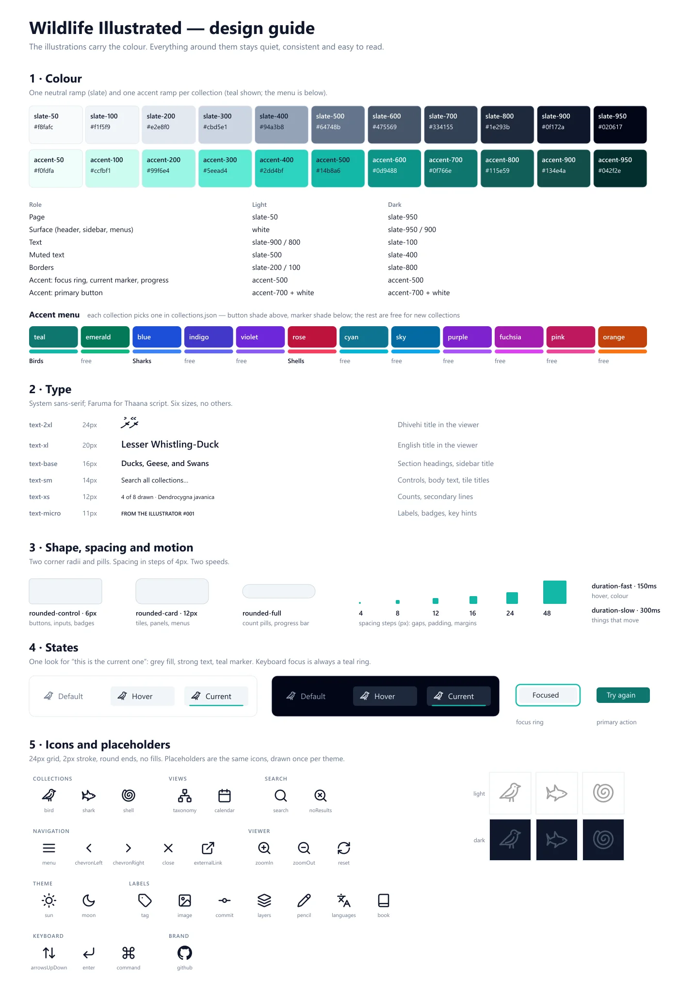

Oct 2024 to now · Web app · Vue and Deno
Building Wildlife Illustrated
A home for the drawings, rebuilt nine times
I am drawing every bird recorded in the Maldives, and the drawings needed somewhere to live. I built a page for them, and then kept rebuilding it. This is the story its changelog tells: what each version changed, what the site does now, how it is put together, and what two years of over-engineering a gallery taught me.
- Started
- October 2024
- Built with
- Vue 3, Vite, Tailwind, Deno
- Drawn so far
- 18 of 276 species

The itch
The list is long: 204 birds, and since then 42 sharks and 30 shells. A folder of image files does not show how far along I am, which family I have been avoiding, or what each bird is called in Dhivehi. I wanted the whole list on one page, with a grey outline for every species I had not drawn yet, so that the gaps were as visible as the drawings.
The first version went up in October 2024 with one drawing on it, the Lesser Whistling-Duck. It was a plain page of HTML, CSS and JavaScript.

Nine versions
The changelog groups the work into nine lines. Three of them were rewrites or migrations that changed almost nothing a visitor could see.
- 0.1A first pageTwo drawings on a hand-written page.
- 0.2DeploymentGitHub Actions publishes the site on every push. A favicon and a title card.
- 0.3Deno and build toolsMoved to Deno and esbuild, and wrote the first tests.
- 0.4Rewritten in VueStarted again from scratch. PNG to WebP, thumbnails, the bird list moved from a text file to JSON, a progress counter.
- 0.5Tailwind and dark modeRestyled with Tailwind, a theme toggle and a footer.
- 0.6Search and dataA full-size view with an information panel, search, sorting by date, my notes on each drawing, and Dhivehi names.
- 0.7More than birdsRestructured so a collection is data, not code. Sharks and shells followed within days.
- 0.8Redesign and performanceSearch across every collection, a performance pass, Lighthouse accessibility and SEO to 100, checks on every pull request.
- 0.9Stores, tests, accessibility, designState split into four stores, shareable links, a real test suite, a design guide, its own icons and a logo.


What it does now
It is still a gallery. Everything added since is there to answer one of three questions: what is this, how far along am I, and where is the one I am looking for.


On a phone
The phone layout got its own pass in October 2026: search moves to its own row, the grid drops to two columns, names are always visible because there is no hover, and the full-size view takes pinch, pan and swipe.
Every drawing has its own address, so a link can open the site straight at one bird.


How it works
There is no server and no database. The repository holds three small programs, and they meet only at a folder of plain files.
raw_png/ (the drawings, not in git)
│
▼
1. Asset pipeline scan → plan → execute → report
│ PNG to WebP, dates new drawings, flags anything missing
▼
public/ collections.json · lists/birds.json · full/ · thumb/
│ the contract: fetched at runtime, never imported
▼
2. The site types ← helpers ← composables ← stores ← components
3. Tests and CI the same checks on every pull request and every deploy
The data decides
A bird is a few lines of JSON. It counts as drawn once it has a date; without one it shows as an outline. Adding a drawing means dropping a PNG in a folder and running one command, which converts it, makes its thumbnail and dates the entry.
{
"id": "001",
"name": "Lesser Whistling-Duck",
"sci": "Dendrocygna javanica",
"dhiv": "Reyru",
"dhiv_script": "ރޭރު",
"drawn": "2024-10-10"
}
Nothing stored that can be worked out
The footer of the site reads something like v0.9.161 · 18 drawings · 4f0f400.
Only the 0.9 is written down anywhere. The patch number is the number
of commits, the drawing count is read from the lists, and the last part is the
commit it was built from. It cannot drift, because there is nothing to forget to
update.
The same rule runs through the app: the counts, the grouped views and the order of the full-size view are all computed from the lists, never saved.
Rules I ended up writing down
One way
- State lives in four stores: search, interface, collections, and the open drawing.
- Components read them and change them only through actions.
One owner
- One piece of code reads and writes the address bar.
- One file holds every icon. One place words the counts.
Pure first
- Logic goes in a plain function when it can.
- The pipeline's planning step is only set arithmetic, so it can be tested without touching a disk.
Trusting it
After the Vue rewrite the site had no tests until July 2026, and every change was checked by clicking around. Most of version 0.9 was making it safe to change.
- 44 → 166
- tests between July and early October 2026, with 41 more added since
- 47.8 → 93.0%
- of lines covered; the build fails below 88%
- 4
- time zones the tests run in, from west of UTC to UTC+14
- 100
- Lighthouse score for accessibility and for SEO
What the tests found
- A drawing dated the 1st of a month showed under the previous month for anyone west of UTC. That is why the tests now run in four time zones.
- A slow collection could finish loading after you had switched away, and show its items under the wrong heading.
- If the list of collections failed to load, the spinner turned forever. It now shows an error and a retry button.
- Searching for "amp" could cut an "&" in half and break the highlighted name.
What gates a change
- Lint, format and type-check.
- Every test, in four tiers: plain functions, a fake browser, property-based tests that try hundreds of random inputs, and a check of the real data files.
- An integrity check that fails on a missing or orphaned image.
- The production build. Pull requests and the deploy run the same list, and nothing ships unless it all passes.
Usable without a mouse
The full-size view is a real dialog: focus moves into it, Tab stays inside, and focus returns to the drawing you opened. Search announces how many results it found. The theme is applied before the first paint, so a dark-theme visitor never sees a white flash, and the site honours the reduce-motion setting.
The look
For most of its life the site looked like whatever I had last changed. In October 2026 I wrote the look down as a system: one neutral ramp, one accent per collection from a menu of twelve contrast-checked hues, six text sizes, two corner radii, two animation speeds, and one look for "this is the current one".
The guide is drawn by a script from the real colours and icons, so it cannot say one thing while the site does another. I used the same idea for this portfolio's guide.
Icons and a logo
Emoji were replaced with line icons on a 24 px grid, and the placeholders for undrawn species are redrawn from each collection's icon. The logo is a bird perched on the open edge of an unfinished frame, in the same stroke as the icons.

What I learned
A lot of it was over-engineered and rewritten for the sake of it, and that is exactly how I learned web development.
- Rewrites feel like progress. Three of the nine versions changed the tools and not the site. Each taught me the tool; none of them added a drawing.
- Tests came late. Every bug in the list above was live when a test found it.
- Derive, do not store. The version number drifted while I kept it by hand, and cannot now that it is worked out from the repository.
- Write the rules down. The architecture, data, testing and design guides are short, and each one settled questions I kept reopening.
What is still missing
- 258 drawings. The site is far ahead of the project it serves.
- Conservation status and seasonality for each species.
- More than one drawing per species.
- Tests for the components themselves; they are still checked by hand.